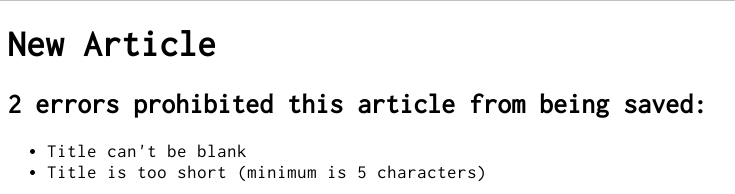
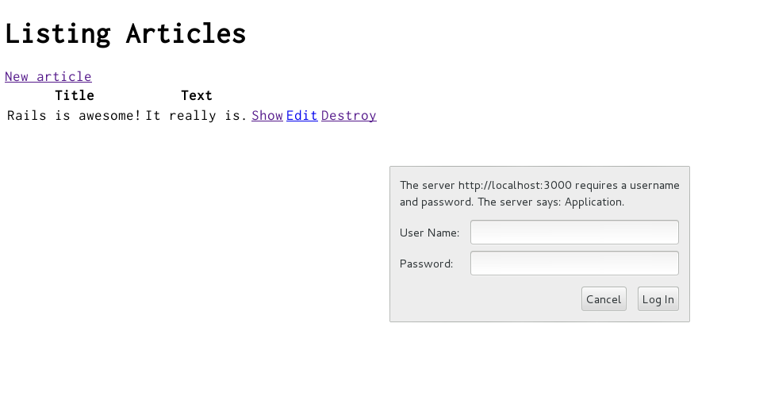

1 가이드에 대한 가정 사항들(Guide Assumptions) {원문·전체}
이 가이드는 레일스 어플리케이션을 처음 부터 시작하는 초보자를 위한 것입니다. 레일스에 관한 어떤한 경험도 없음을 가정하고 쓰여진 것입니다. 하지만 최대한으로 얻어 가실려면 아래의 것들을 미리 설치하시면 됩니다. [[[This guide is designed for beginners who want to get started with a Rails application from scratch. It does not assume that you have any prior experience with Rails. However, to get the most out of it, you need to have some prerequisites installed:]]]
-
The Ruby language version 1.9.3 or newer
-
The RubyGems packaging system]]] 루비잼에 대해서 더 배우시길 원하신다면 RubyGems User Guide를 읽기 바랍니다. [[[* To learn more about RubyGems, please read the 루비잼 사용자 가이드
-
동작하는 SQLite3 데이터베이스 {원문·전체}
A working installation of the SQLite3 Database
레일스는 루비 프로그래밍 언어에서 동작하는 웹 어플리케이션 프레임워크입니다. 루비에 대한 경험이 없다면 레일스로 바로 들어가기에는 진입장벽이 높을 것입니다. 인터넷이 루비를 배우기 위한 많은 무료자료들이 있습니다. 대표적으로 아래의 것들이 있습니다. [[[Rails is a web application framework running on the Ruby programming language. If you have no prior experience with Ruby, you will find a very steep learning curve diving straight into Rails. There are some good free resources on the internet for learning Ruby, including:]]]
2 레일스란?(What is Rails?) {원문·전체}
레일스는 루비로 작성된 웹 어플리케이션 개발 프레임워크 입니다. 모든 개발자들이 필요한 것을 미리 가정(설정)해 놓음으로서 웹 어플리케이션 개발이 더욱 쉽도록 디자인 되었습니다. 그 어떤 언어나 프레임워크보다도 적은 코드를 작성하게 끔 만들어 졌습니다. 숙련된 레일스 개발자들에 의하면 웹 개발을 더욱 재미있게 만들어 주기까지 한답니다. [[[Rails is a web application development framework written in the Ruby language. It is designed to make programming web applications easier by making assumptions about what every developer needs to get started. It allows you to write less code while accomplishing more than many other languages and frameworks. Experienced Rails developers also report that it makes web application development more fun.]]]
레일스는 독단적인 소프트웨어 입니다. "최선"의 방법이 있다고 가정하고 그 방법을 사용하도록 독려를 합니다. 때로는 다른 방법의 사용하지 않게 추천합니다. "The Rails Way"(레일스 방법론?)을 배우게 된다면 엄청나게 효율성이 늘어난다는 것을 느낄수 있을 것입니다. 다른 언어에서 사용하던 오래된 습관을 고집하고나 다른 곳에서 배운 패턴들을 사용하려고 한다면 아마도 덜 즐거운 경험이 될 것입니다. [[[Rails is opinionated software. It makes the assumption that there is the "best" way to do things, and it's designed to encourage that way - and in some cases to discourage alternatives. If you learn "The Rails Way" you'll probably discover a tremendous increase in productivity. If you persist in bringing old habits from other languages to your Rails development, and trying to use patterns you learned elsewhere, you may have a less happy experience.]]]
레이스의 철학은 두가지의 핵심 원리로 이루어져 있습니다. {원문·전체}
The Rails philosophy includes two major guiding principles:
-
DRY - "Don't Repeat Yourself"(너 자신을 반복하지마라, 했던 것을 또 하지마라) - DRY는 작성했던 코드를 반복해서 다시 작성하는 것은 나쁜 것임을 시사합니다. {원문·전체}
DRY - "Don't Repeat Yourself" - suggests that writing the same code over and over again is a bad thing.
-
설정보다는 규칙 - 말인 즉슨 레일스가 당신이 무엇을 원하는지 그리고 어떻게 할 것인지에 대한 가정을 하고 작은 사항까지 끝이 없는 설정을 요구하는 것이 아닙니다. {원문·전체}
Convention Over Configuration - means that Rails makes assumptions about what you want to do and how you're going to do it, rather than requiring you to specify every little thing through endless configuration files.
3 새로운 레일스 프로젝트 만들기(Creating a New Rails Project) {원문·전체}
이 가이드를 사용하기 가장 좋은 방법은 매 단계를 따라하는 것입니다. 이 예시 어플리케이션에서의 어떠한 코드나 과정도 빠지지 않았습니다. 말그대로 단계 단계 그대로 따라하면 됩니다. 여기.에서 완성된 코드를 받으실수 있습니다. [[[The best way to use this guide is to follow each step as it happens, no code or step needed to make this example application has been left out, so you can literally follow along step by step. You can get the complete code here.]]]
가이드를 따라감으로써 (매우) 간단한 웹블로그 'blog'라는 레일스 프로 젝트를 생성하게 될 것입니다.
어플리케이션을 제작하기 시작하기 전에 레일스가 설치되어있는지 확인 해야합니다.
[[[By following along with this guide, you'll create a Rails project called
blog, a
(very) simple weblog. Before you can start building the application, you need to
make sure that you have Rails itself installed.]]]
'#'과 '$'는 UNIX-like OS(유사 유니스 운영체제)의 터미널 프롬프트에서 각각 슈퍼유저와 일반유저를 나타내는 것입니다. 윈도우를 사용하신다면 c:\source_code>과 같이 표시될 것입니다. {원문·전체}
The examples below use # and $ to denote superuser and regular user terminal prompts respectively in a UNIX-like OS. If you are using Windows, your prompt will look something like c:\source_code>
3.1 레일스 설치하기 [[[Installing Rails]]]
커맨드 라인 프롬프트를 엽니다. 맥 OS X에서 터미널.app을 윈도우에서는 스타트 메뉴에 있는 "Run"에서 'cmd.exe'를 실행시킵니다.
어떠한 명령어도 달라 싸인 '$'과 앞에 붙어 나오는 경우에는 커맨드 라인을 실행 시켜야합니다. 최신 버젼의 루비가 설치되어 있는지 확인합니다.
[[[Open up a command line prompt. On Mac OS X open Terminal.app, on Windows choose
"Run" from your Start menu and type 'cmd.exe'. Any commands prefaced with a
dollar sign $ should be run in the command line. Verify that you have a
current version of Ruby installed:]]]
$ ruby -v ruby 1.9.3p385
레일스를 설치하기 위해서 루비잼에 의해서 제공되는 'gem install' 명령을 사용합니다. {원문·전체}
To install Rails, use the gem install command provided by RubyGems:
$ gem install rails
루비 온 레일스를 빠르게 설치하기를 도와줄 많은 툴들이 존재합니다. 윈도우 사용자들은 Rails Installer, 맥 OS X 사용자들은 Rails One Click을 사용하실수 있습니다. [[[A number of tools exist to help you quickly install Ruby and Ruby on Rails on your system. Windows users can use Rails Installer, while Mac OS X users can use Rails One Click.]]]
모든 것이 제대로 설치 되었는지 확인하기 위해서는 아래의 명령어들을 실행 시킬수 있으셔야 합니다. {원문·전체}
To verify that you have everything installed correctly, you should be able to run the following:
$ rails --version
먄약 "Rails 4.0.0"와 같이 나타난다면 계속 진행 하실 준비가 되신 것 입니다. {원문·전체}
If it says something like "Rails 4.0.0", you are ready to continue.
3.2 블로그 어플리케이션 만들기 [[[Creating the Blog Application]]]
레일스는 특정한 업무를 시작하는 데 필요한것을 만들어 줌으로 개발자들의 삶을 편하게 만들어줄 많은 제너레이터(generators)라는 스크립트와 함께 옵니다. 이런 스크립트중 하나인 새 어플리케이션 제너레이터 (new application generator)는 개발자 스스로 작성할 필요없이, 레일스 어플리케이션의 기본적인 구조를 제공합니다. {원문·전체}
Rails comes with a number of scripts called generators that are designed to make your development life easier by creating everything that's necessary to start working on a particular task. One of these is the new application generator, which will provide you with the foundation of a fresh Rails application so that you don't have to write it yourself.
제너레이터를 사용하기 위해서는 터미널을 열고 파일 쓰기 권한이 있는 디렉토리에 가서 아래와 같이 치면 됩니다: {원문·전체}
To use this generator, open a terminal, navigate to a directory where you have rights to create files, and type:
$ rails new blog
이 과정은 blog 디렉토리에 Blog라고 불리는 레일스 에플리케이션을 생성할것이고 bundle install을 통해서 Gemfile에 게시되어 있는 젬들과 의존 젬들을 설치합니다. {원문·전체}
This will create a Rails application called Blog in a directory called blog and install the gem dependencies that are already mentioned in Gemfile using bundle install.
레일스 어플리케이션 빌더가 허락하는 모든 커맨드 라인 옵션은 rails new -h을 실행시킴으로써 확인할 수 있습니다. {원문·전체}
You can see all of the command line options that the Rails application builder accepts by running rails new -h.
blog 어플리케이션을 생성후 어플리케이션에서 직접 작업을 할수있도록 그 폴더로 옮겨갑니다: {원문·전체}
After you create the blog application, switch to its folder to continue work directly in that application:
$ cd blog
위에서 실행시킨 명령인 rails new blog는 현제 작업하는 경로에 blog라는 폴더를 생성해 줍니다.
blog 디렉토리에는 레일스 어플리케이션의 골격을 구성하는 많은 자동생성된 파일과 폴더들이 있습니다.
이 튜토리얼의 대부분의 작업은 app/ 폴더에서 일어날 것이지만 여기 레일스가 기본적으로 생성하는 파일과 폴더들의 기능들의 기본적 설명이 있습니다.
[[[The rails new blog command we ran above created a folder in your
working directory called blog. The blog directory has a number of
auto-generated files and folders that make up the structure of a Rails
application. Most of the work in this tutorial will happen in the app/ folder, but here's a basic rundown on the function of each of the files and folders that Rails created by default:]]]
| File/Folder | Purpose |
|---|---|
| app/ | 어플리케이션을 위한 컨트롤러(controllers),모델(models),뷰(views),헬퍼(helpers),메일러(mailers) 그리고 어셑(assets)들을 포함하고 있습니다. 가이드 나머지 부분에서 이 폴더를 계속 집중 하게 될 것입니다. |
| bin/ | 당신의 엡을 시작하게 할 레일스 스크립트를 포함하고 있으며 디플로이(deploy)또는 엡을 실행 시킬떄 사용하게 될 다른 스크립트들을 포함 할수 있습니다. |
| config/ | 런타임 규칙, 경로(routes),데이타베이스 등을 설정하실수 있습니다. 자세한 사항은 레일스 에플리케이션 설정하기에서 다룹니다. |
| config.ru | 에플리케이션을 시작하는데 사용되는 레이크로 구성된 서버를 위한한 레이크 설정(Rack configuration). |
| db/ | 현재의 데이터베이스 개요(database schema) 그리고 데이터베이스 마이그레이션(database migrations)을 포함하고 있습니다. |
| Gemfile Gemfile.lock |
이 파일들은 레일스 에플리케이션에 필요한 잼 종속성(dependencies)을 명시하는 곳입니다.이 파일들은 번들러 잼(Bundler gem)에 의해서 사용됩니다.번들러에 관한 더 많은 정보는 번들러 웹페이지에서 확인하시길 바랍니다. |
| lib/ | 당신의 어플레케이션을 위한 확장 모듈들. |
| log/ | 어플리케이션의 로그 파일들. |
| public/ | 그 자체로 세상에 보여지는 유일한 폴더입니다. 정적 파일들과 컴파일된 어셑들을 포함하고 있습니다. |
| Rakefile | 이 파일은 커맨드 라인에서 실행될수있는 테스크들을 위치시키고 로드 시킵니다. 테스크에 대한 정의들은 레일스 컴포넌트 도처에 정의 되어있습니다. 레이크파일(Rakefile)을 수정하기 보다는 에플리케이션의 lib/tasks 경로에 파일을 추가함으로서 자신만의 테스크를 추가하는것이 바람직 합니다. |
| README.rdoc | 이 파일은 당신의 에플리케이션의 간단한 사용 설명서입니다. 이 파일은 다른사람들에게 어플리케이션이 무엇을 하는지, 어떻게 사용할지 설명하기, 등을 위해서 수정해야 합니다. |
| test/ | 유닡 테스트(unit tests), fixtures 그리고 다른 테스트 장치들. 자세한 사항은 레일스 어플리케이션 테스트 하기에서 다뤄 집니다. |
| tmp/ | 임시 파일들.(케쉬, pid 그리고 세션파일들) |
| vendor/ | 모든 써드 파디 코드를 두는 곳입니다. 일반적인 레일스 어플리케이션에서는 루비 잼 과 레일즈 보안 코드(만약 선택적으로 프로젝트에 설치를 원한다면)가 포합됩니다. |
4 Hello, Rails!
To begin with, let's get some text up on screen quickly. To do this, you need to get your Rails application server running.
4.1 Starting up the Web Server
You actually have a functional Rails application already. To see it, you need to start a web server on your development machine. You can do this by running:
$ rails server
Compiling CoffeeScript to JavaScript requires a JavaScript runtime and the absence of a runtime will give you an execjs error. Usually Mac OS X and Windows come with a JavaScript runtime installed. Rails adds the therubyracer gem to Gemfile in a commented line for new apps and you can uncomment if you need it. therubyrhino is the recommended runtime for JRuby users and is added by default to Gemfile in apps generated under JRuby. You can investigate about all the supported runtimes at ExecJS.
This will fire up WEBrick, a webserver built into Ruby by default. To see your application in action, open a browser window and navigate to http://localhost:3000. You should see the Rails default information page:

To stop the web server, hit Ctrl+C in the terminal window where it's running. To verify the server has stopped you should see your command prompt cursor again. For most UNIX-like systems including Mac OS X this will be a dollar sign $. In development mode, Rails does not generally require you to restart the server; changes you make in files will be automatically picked up by the server.
The "Welcome Aboard" page is the smoke test for a new Rails application: it makes sure that you have your software configured correctly enough to serve a page. You can also click on the About your application’s environment link to see a summary of your application's environment.
4.2 Say "Hello", Rails
To get Rails saying "Hello", you need to create at minimum a controller and a view.
A controller's purpose is to receive specific requests for the application. Routing decides which controller receives which requests. Often, there is more than one route to each controller, and different routes can be served by different actions. Each action's purpose is to collect information to provide it to a view.
A view's purpose is to display this information in a human readable format. An important distinction to make is that it is the controller, not the view, where information is collected. The view should just display that information. By default, view templates are written in a language called ERB (Embedded Ruby) which is converted by the request cycle in Rails before being sent to the user.
To create a new controller, you will need to run the "controller" generator and tell it you want a controller called "welcome" with an action called "index", just like this:
$ rails generate controller welcome index
Rails will create several files and a route for you.
create app/controllers/welcome_controller.rb route get "welcome/index" invoke erb create app/views/welcome create app/views/welcome/index.html.erb invoke test_unit create test/controllers/welcome_controller_test.rb invoke helper create app/helpers/welcome_helper.rb invoke test_unit create test/helpers/welcome_helper_test.rb invoke assets invoke coffee create app/assets/javascripts/welcome.js.coffee invoke scss create app/assets/stylesheets/welcome.css.scss
Most important of these are of course the controller, located at app/controllers/welcome_controller.rb and the view, located at app/views/welcome/index.html.erb.
Open the app/views/welcome/index.html.erb file in your text editor. Delete all of the existing code in the file, and replace it with the following single line of code:
<h1>Hello, Rails!</h1>
4.3 Setting the Application Home Page
Now that we have made the controller and view, we need to tell Rails when we want Hello Rails! to show up. In our case, we want it to show up when we navigate to the root URL of our site, http://localhost:3000. At the moment, "Welcome Aboard" is occupying that spot.
Next, you have to tell Rails where your actual home page is located.
Open the file config/routes.rb in your editor.
Blog::Application.routes.draw do get "welcome/index" # The priority is based upon order of creation: # first created -> highest priority. # ... # You can have the root of your site routed with "root" # root to: "welcome#index"
This is your application's routing file which holds entries in a special DSL (domain-specific language) that tells Rails how to connect incoming requests to controllers and actions. This file contains many sample routes on commented lines, and one of them actually shows you how to connect the root of your site to a specific controller and action. Find the line beginning with root :to and uncomment it. It should look something like the following:
root to: "welcome#index"
The root to: "welcome#index" tells Rails to map requests to the root of the application to the welcome controller's index action and get "welcome/index" tells Rails to map requests to http://localhost:3000/welcome/index to the welcome controller's index action. This was created earlier when you ran the controller generator (rails generate controller welcome index).
If you navigate to http://localhost:3000 in your browser, you'll see the Hello, Rails! message you put into app/views/welcome/index.html.erb, indicating that this new route is indeed going to WelcomeController's index action and is rendering the view correctly.
For more information about routing, refer to Rails Routing from the Outside In.
5 Getting Up and Running
Now that you've seen how to create a controller, an action and a view, let's create something with a bit more substance.
In the Blog application, you will now create a new resource. A resource is the term used for a collection of similar objects, such as posts, people or animals. You can create, read, update and destroy items for a resource and these operations are referred to as CRUD operations.
Rails provides a resources method which can be used to declare a
standard REST resource. Here's how config/routes.rb will look like.
Blog::Application.routes.draw do resources :posts root to: "welcome#index" end
If you run rake routes, you'll see that all the routes for the
standard RESTful actions.
$ rake routes
posts GET /posts(.:format) posts#index
POST /posts(.:format) posts#create
new_post GET /posts/new(.:format) posts#new
edit_post GET /posts/:id/edit(.:format) posts#edit
post GET /posts/:id(.:format) posts#show
PATCH /posts/:id(.:format) posts#update
PUT /posts/:id(.:format) posts#update
DELETE /posts/:id(.:format) posts#destroy
root / welcome#index
In the next section, you will add the ability to create new posts in your application and be able to view them. This is the "C" and the "R" from CRUD: creation and reading. The form for doing this will look like this:

It will look a little basic for now, but that's ok. We'll look at improving the styling for it afterwards.
5.1 Laying down the ground work
The first thing that you are going to need to create a new post within the application is a place to do that. A great place for that would be at /posts/new. With the route already defined, requests can now be made to /posts/new in the application. Navigate to http://localhost:3000/posts/new and you'll see a routing error:

This error occurs because the route needs to have a controller defined in order to serve the request. The solution to this particular problem is simple: create a controller called PostsController. You can do this by running this command:
$ rails g controller posts
If you open up the newly generated app/controllers/posts_controller.rb you'll see a fairly empty controller:
class PostsController < ApplicationController end
A controller is simply a class that is defined to inherit from ApplicationController. It's inside this class that you'll define methods that will become the actions for this controller. These actions will perform CRUD operations on the posts within our system.
If you refresh http://localhost:3000/posts/new now, you'll get a new error:

This error indicates that Rails cannot find the new action inside the PostsController that you just generated. This is because when controllers are generated in Rails they are empty by default, unless you tell it you wanted actions during the generation process.
To manually define an action inside a controller, all you need to do is to define a new method inside the controller. Open app/controllers/posts_controller.rb and inside the PostsController class, define a new method like this:
def new end
With the new method defined in PostsController, if you refresh http://localhost:3000/posts/new you'll see another error:

You're getting this error now because Rails expects plain actions like this one to have views associated with them to display their information. With no view available, Rails errors out.
In the above image, the bottom line has been truncated. Let's see what the full thing looks like:
Missing template posts/new, application/new with {locale:[:en], formats:[:html], handlers:[:erb, :builder, :coffee]}. Searched in: * "/path/to/blog/app/views"
That's quite a lot of text! Let's quickly go through and understand what each part of it does.
The first part identifies what template is missing. In this case, it's the posts/new template. Rails will first look for this template. If not found, then it will attempt to load a template called application/new. It looks for one here because the PostsController inherits from ApplicationController.
The next part of the message contains a hash. The :locale key in this hash simply indicates what spoken language template should be retrieved. By default, this is the English — or "en" — template. The next key, :formats specifies the format of template to be served in response. The default format is :html, and so Rails is looking for an HTML template. The final key, :handlers, is telling us what template handlers could be used to render our template. :erb is most commonly used for HTML templates, :builder is used for XML templates, and :coffee uses CoffeeScript to build JavaScript templates.
The final part of this message tells us where Rails has looked for the templates. Templates within a basic Rails application like this are kept in a single location, but in more complex applications it could be many different paths.
The simplest template that would work in this case would be one located at app/views/posts/new.html.erb. The extension of this file name is key: the first extension is the format of the template, and the second extension is the handler that will be used. Rails is attempting to find a template called posts/new within app/views for the application. The format for this template can only be html and the handler must be one of erb, builder or coffee. Because you want to create a new HTML form, you will be using the ERB language. Therefore the file should be called posts/new.html.erb and needs to be located inside the app/views directory of the application.
Go ahead now and create a new file at app/views/posts/new.html.erb and write this content in it:
<h1>New Post</h1>
When you refresh http://localhost:3000/posts/new you'll now see that the page has a title. The route, controller, action and view are now working harmoniously! It's time to create the form for a new post.
5.2 The first form
To create a form within this template, you will use a form
builder. The primary form builder for Rails is provided by a helper
method called form_for. To use this method, add this code into app/views/posts/new.html.erb:
<%= form_for :post do |f| %>
<p>
<%= f.label :title %><br>
<%= f.text_field :title %>
</p>
<p>
<%= f.label :text %><br>
<%= f.text_area :text %>
</p>
<p>
<%= f.submit %>
</p>
<% end %>
If you refresh the page now, you'll see the exact same form as in the example. Building forms in Rails is really just that easy!
When you call form_for, you pass it an identifying object for this
form. In this case, it's the symbol :post. This tells the form_for
helper what this form is for. Inside the block for this method, the
FormBuilder object — represented by f — is used to build two labels and two text fields, one each for the title and text of a post. Finally, a call to submit on the f object will create a submit button for the form.
There's one problem with this form though. If you inspect the HTML that is generated, by viewing the source of the page, you will see that the action attribute for the form is pointing at /posts/new. This is a problem because this route goes to the very page that you're on right at the moment, and that route should only be used to display the form for a new post.
The form needs to use a different URL in order to go somewhere else.
This can be done quite simply with the :url option of form_for.
Typically in Rails, the action that is used for new form submissions
like this is called "create", and so the form should be pointed to that action.
Edit the form_for line inside app/views/posts/new.html.erb to look like this:
<%= form_for :post, url: posts_path do |f| %>
In this example, the posts_path helper is passed to the :url option. What Rails will do with this is that it will point the form to the create action of the current controller, the PostsController, and will send a POST request to that route.
By using the post method rather than the get method, Rails will define a route that will only respond to POST methods. The POST method is the typical method used by forms all over the web.
With the form and its associated route defined, you will be able to fill in the form and then click the submit button to begin the process of creating a new post, so go ahead and do that. When you submit the form, you should see a familiar error:

You now need to create the create action within the PostsController for this to work.
5.3 Creating posts
To make the "Unknown action" go away, you can define a create action within the PostsController class in app/controllers/posts_controller.rb, underneath the new action:
class PostsController < ApplicationController def new end def create end end
If you re-submit the form now, you'll see another familiar error: a template is missing. That's ok, we can ignore that for now. What the create action should be doing is saving our new post to a database.
When a form is submitted, the fields of the form are sent to Rails as parameters. These parameters can then be referenced inside the controller actions, typically to perform a particular task. To see what these parameters look like, change the create action to this:
def create render text: params[:post].inspect end
The render method here is taking a very simple hash with a key of text and value of params[:post].inspect. The params method is the object which represents the parameters (or fields) coming in from the form. The params method returns an ActiveSupport::HashWithIndifferentAccess object, which allows you to access the keys of the hash using either strings or symbols. In this situation, the only parameters that matter are the ones from the form.
If you re-submit the form one more time you'll now no longer get the missing template error. Instead, you'll see something that looks like the following:
{"title"=>"First post!", "text"=>"This is my first post."}
This action is now displaying the parameters for the post that are coming in from the form. However, this isn't really all that helpful. Yes, you can see the parameters but nothing in particular is being done with them.
5.4 Creating the Post model
Models in Rails use a singular name, and their corresponding database tables use a plural name. Rails provides a generator for creating models, which most Rails developers tend to use when creating new models. To create the new model, run this command in your terminal:
$ rails generate model Post title:string text:text
With that command we told Rails that we want a Post model, together
with a title attribute of type string, and a text attribute
of type text. Those attributes are automatically added to the posts
table in the database and mapped to the Post model.
Rails responded by creating a bunch of files. For
now, we're only interested in app/models/post.rb and
db/migrate/20120419084633_create_posts.rb (your name could be a bit
different). The latter is responsible
for creating the database structure, which is what we'll look at next.
Active Record is smart enough to automatically map column names to model attributes, which means you don't have to declare attributes inside Rails models, as that will be done automatically by Active Record.
5.5 Running a Migration
As we've just seen, rails generate model created a database
migration file inside the db/migrate directory.
Migrations are Ruby classes that are designed to make it simple to
create and modify database tables. Rails uses rake commands to run migrations,
and it's possible to undo a migration after it's been applied to your database.
Migration filenames include a timestamp to ensure that they're processed in the
order that they were created.
If you look in the db/migrate/20120419084633_create_posts.rb file (remember,
yours will have a slightly different name), here's what you'll find:
class CreatePosts < ActiveRecord::Migration
def change
create_table :posts do |t|
t.string :title
t.text :text
t.timestamps
end
end
end
The above migration creates a method named change which will be called when you
run this migration. The action defined in this method is also reversible, which
means Rails knows how to reverse the change made by this migration, in case you
want to reverse it later. When you run this migration it will create a
posts table with one string column and a text column. It also creates two
timestamp fields to allow Rails to track post creation and update times.
For more information about migrations, refer to Rails Database Migrations.
At this point, you can use a rake command to run the migration:
$ rake db:migrate
Rails will execute this migration command and tell you it created the Posts table.
== CreatePosts: migrating ==================================================== -- create_table(:posts) -> 0.0019s == CreatePosts: migrated (0.0020s) ===========================================
Because you're working in the development environment by default, this
command will apply to the database defined in the development section of your
config/database.yml file. If you would like to execute migrations in another
environment, for instance in production, you must explicitly pass it when
invoking the command: rake db:migrate RAILS_ENV=production.
5.6 Saving data in the controller
Back in posts_controller, we need to change the create action
to use the new Post model to save the data in the database. Open app/controllers/posts_controller.rb
and change the create action to look like this:
def create @post = Post.new(params[:post]) @post.save redirect_to @post end
Here's what's going on: every Rails model can be initialized with its
respective attributes, which are automatically mapped to the respective
database columns. In the first line we do just that (remember that
params[:post] contains the attributes we're interested in). Then,
@post.save is responsible for saving the model in the database.
Finally, we redirect the user to the show action,
which we'll define later.
As we'll see later, @post.save returns a boolean indicating
whether the model was saved or not.
5.7 Showing Posts
If you submit the form again now, Rails will complain about not finding
the show action. That's not very useful though, so let's add the
show action before proceeding.
post GET /posts/:id(.:format) posts#show
The special syntax :id tells rails that this route expects an :id
parameter, which in our case will be the id of the post.
As we did before, we need to add the show action in
app/controllers/posts_controller.rb and its respective view.
def show @post = Post.find(params[:id]) end
A couple of things to note. We use Post.find to find the post we're
interested in. We also use an instance variable (prefixed by @) to
hold a reference to the post object. We do this because Rails will pass all instance
variables to the view.
Now, create a new file app/views/posts/show.html.erb with the following
content:
<p> <strong>Title:</strong> <%= @post.title %> </p> <p> <strong>Text:</strong> <%= @post.text %> </p>
If you now go to http://localhost:3000/posts/new you'll almost be able to create a post. Try it! You should get an error that looks like this:

Rails has several security features that help you write secure applications,
and you're running into one of them now. This one is called
'strong_parameters,' which requires us to tell Rails exactly which parameters
we want to accept in our controllers. In this case, we want to allow the
'title' and 'text' parameters, so change your create controller action to
look like this:
def create
@post = Post.new(params[:post].permit(:title, :text))
@post.save
redirect_to @post
end
See the permit? It allows us to accept both title and text in this
action. With this change, you should finally be able to create new Posts.
Visit http://localhost:3000/posts/new and give it a try!

5.8 Listing all posts
We still need a way to list all our posts, so let's do that.
We'll use a specific route from config/routes.rb:
posts GET /posts(.:format) posts#index
And an action for that route inside the PostsController in the app/controllers/posts_controller.rb file:
def index @posts = Post.all end
And then finally a view for this action, located at app/views/posts/index.html.erb:
<h1>Listing posts</h1>
<table>
<tr>
<th>Title</th>
<th>Text</th>
</tr>
<% @posts.each do |post| %>
<tr>
<td><%= post.title %></td>
<td><%= post.text %></td>
</tr>
<% end %>
</table>
Now if you go to http://localhost:3000/posts you will see a list of all the posts that you have created.
5.9 Adding links
You can now create, show, and list posts. Now let's add some links to navigate through pages.
Open app/views/welcome/index.html.erb and modify it as follows:
<h1>Hello, Rails!</h1> <%= link_to "My Blog", controller: "posts" %>
The link_to method is one of Rails' built-in view helpers. It creates a
hyperlink based on text to display and where to go - in this case, to the path
for posts.
Let's add links to the other views as well, starting with adding this "New Post" link to app/views/posts/index.html.erb, placing it above the <table> tag:
<%= link_to 'New post', new_post_path %>
This link will allow you to bring up the form that lets you create a new post. You should also add a link to this template — app/views/posts/new.html.erb — to go back to the index action. Do this by adding this underneath the form in this template:
<%= form_for :post do |f| %> ... <% end %> <%= link_to 'Back', posts_path %>
Finally, add another link to the app/views/posts/show.html.erb template to go back to the index action as well, so that people who are viewing a single post can go back and view the whole list again:
<p> <strong>Title:</strong> <%= @post.title %> </p> <p> <strong>Text:</strong> <%= @post.text %> </p> <%= link_to 'Back', posts_path %>
If you want to link to an action in the same controller, you don't
need to specify the :controller option, as Rails will use the current
controller by default.
In development mode (which is what you're working in by default), Rails reloads your application with every browser request, so there's no need to stop and restart the web server when a change is made.
5.10 Allowing the update of fields
The model file, app/models/post.rb is about as simple as it can get:
class Post < ActiveRecord::Base end
There isn't much to this file - but note that the Post class inherits from
ActiveRecord::Base. Active Record supplies a great deal of functionality to
your Rails models for free, including basic database CRUD (Create, Read, Update,
Destroy) operations, data validation, as well as sophisticated search support
and the ability to relate multiple models to one another.
5.11 Adding Some Validation
Rails includes methods to help you validate the data that you send to models.
Open the app/models/post.rb file and edit it:
class Post < ActiveRecord::Base
validates :title, presence: true,
length: { minimum: 5 }
end
These changes will ensure that all posts have a title that is at least five characters long. Rails can validate a variety of conditions in a model, including the presence or uniqueness of columns, their format, and the existence of associated objects. Validations are covered in detail in Active Record Validations
With the validation now in place, when you call @post.save on an invalid
post, it will return false. If you open app/controllers/posts_controller.rb
again, you'll notice that we don't check the result of calling @post.save
inside the create action. If @post.save fails in this situation, we need to
show the form back to the user. To do this, change the new and create
actions inside app/controllers/posts_controller.rb to these:
def new
@post = Post.new
end
def create
@post = Post.new(params[:post].permit(:title, :text))
if @post.save
redirect_to @post
else
render 'new'
end
end
The new action is now creating a new instance variable called @post, and
you'll see why that is in just a few moments.
Notice that inside the create action we use render instead of redirect_to when save
returns false. The render method is used so that the @post object is passed back to the new template when it is rendered. This rendering is done within the same request as the form submission, whereas the redirect_to will tell the browser to issue another request.
If you reload
http://localhost:3000/posts/new and
try to save a post without a title, Rails will send you back to the
form, but that's not very useful. You need to tell the user that
something went wrong. To do that, you'll modify
app/views/posts/new.html.erb to check for error messages:
<%= form_for :post, url: posts_path do |f| %>
<% if @post.errors.any? %>
<div id="errorExplanation">
<h2><%= pluralize(@post.errors.count, "error") %> prohibited
this post from being saved:</h2>
<ul>
<% @post.errors.full_messages.each do |msg| %>
<li><%= msg %></li>
<% end %>
</ul>
</div>
<% end %>
<p>
<%= f.label :title %><br>
<%= f.text_field :title %>
</p>
<p>
<%= f.label :text %><br>
<%= f.text_area :text %>
</p>
<p>
<%= f.submit %>
</p>
<% end %>
<%= link_to 'Back', posts_path %>
A few things are going on. We check if there are any errors with
@post.errors.any?, and in that case we show a list of all
errors with @post.errors.full_messages.
pluralize is a rails helper that takes a number and a string as its
arguments. If the number is greater than one, the string will be automatically pluralized.
The reason why we added @post = Post.new in posts_controller is that
otherwise @post would be nil in our view, and calling
@post.errors.any? would throw an error.
Rails automatically wraps fields that contain an error with a div
with class field_with_errors. You can define a css rule to make them
standout.
Now you'll get a nice error message when saving a post without title when you attempt to do just that on the new post form (http://localhost:3000/posts/new).

5.12 Updating Posts
We've covered the "CR" part of CRUD. Now let's focus on the "U" part, updating posts.
The first step we'll take is adding an edit action to posts_controller.
def edit @post = Post.find(params[:id]) end
The view will contain a form similar to the one we used when creating
new posts. Create a file called app/views/posts/edit.html.erb and make
it look as follows:
<h1>Editing post</h1>
<%= form_for :post, url: post_path(@post.id) },
method: :patch do |f| %>
<% if @post.errors.any? %>
<div id="errorExplanation">
<h2><%= pluralize(@post.errors.count, "error") %> prohibited
this post from being saved:</h2>
<ul>
<% @post.errors.full_messages.each do |msg| %>
<li><%= msg %></li>
<% end %>
</ul>
</div>
<% end %>
<p>
<%= f.label :title %><br>
<%= f.text_field :title %>
</p>
<p>
<%= f.label :text %><br>
<%= f.text_area :text %>
</p>
<p>
<%= f.submit %>
</p>
<% end %>
<%= link_to 'Back', posts_path %>
This time we point the form to the update action, which is not defined yet
but will be very soon.
The method: :patch option tells Rails that we want this form to be submitted
via the PATCH HTTP method which is the HTTP method you're expected to use to
update resources according to the REST protocol.
By default forms built with the form_for helper are sent via POST.
Next we need to create the update action in app/controllers/posts_controller.rb:
def update
@post = Post.find(params[:id])
if @post.update(params[:post].permit(:title, :text))
redirect_to @post
else
render 'edit'
end
end
The new method, update, is used when you want to update a record
that already exists, and it accepts a hash containing the attributes
that you want to update. As before, if there was an error updating the
post we want to show the form back to the user.
You don't need to pass all attributes to update. For
example, if you'd call @post.update(title: 'A new title')
Rails would only update the title attribute, leaving all other
attributes untouched.
Finally, we want to show a link to the edit action in the list of all the
posts, so let's add that now to app/views/posts/index.html.erb to make it
appear next to the "Show" link:
<table>
<tr>
<th>Title</th>
<th>Text</th>
<th></th>
<th></th>
</tr>
<% @posts.each do |post| %>
<tr>
<td><%= post.title %></td>
<td><%= post.text %></td>
<td><%= link_to 'Show', post_path %></td>
<td><%= link_to 'Edit', edit_post_path(post) %></td>
</tr>
<% end %>
</table>
And we'll also add one to the app/views/posts/show.html.erb template as well,
so that there's also an "Edit" link on a post's page. Add this at the bottom of
the template:
... <%= link_to 'Back', posts_path %> | <%= link_to 'Edit', edit_post_path(@post) %>
And here's how our app looks so far:

5.13 Using partials to clean up duplication in views
Our edit page looks very similar to the new page, in fact they
both share the same code for displaying the form. Let's remove some duplication
by using a view partial. By convention, partial files are prefixed by an
underscore.
You can read more about partials in the Layouts and Rendering in Rails guide.
Create a new file app/views/posts/_form.html.erb with the following
content:
<%= form_for @post do |f| %>
<% if @post.errors.any? %>
<div id="errorExplanation">
<h2><%= pluralize(@post.errors.count, "error") %> prohibited
this post from being saved:</h2>
<ul>
<% @post.errors.full_messages.each do |msg| %>
<li><%= msg %></li>
<% end %>
</ul>
</div>
<% end %>
<p>
<%= f.label :title %><br>
<%= f.text_field :title %>
</p>
<p>
<%= f.label :text %><br>
<%= f.text_area :text %>
</p>
<p>
<%= f.submit %>
</p>
<% end %>
Everything except for the form_for declaration remained the same.
How form_for can figure out the right action and method attributes
when building the form will be explained in just a moment. For now, let's update the
app/views/posts/new.html.erb view to use this new partial, rewriting it
completely:
<h1>New post</h1> <%= render 'form' %> <%= link_to 'Back', posts_path %>
Then do the same for the app/views/posts/edit.html.erb view:
<h1>Edit post</h1> <%= render 'form' %> <%= link_to 'Back', posts_path %>
5.14 Deleting Posts
We're now ready to cover the "D" part of CRUD, deleting posts from the
database. Following the REST convention, the route for
deleting posts in the config/routes.rb is:
DELETE /posts/:id(.:format) posts#destroy
The delete routing method should be used for routes that destroy
resources. If this was left as a typical get route, it could be possible for
people to craft malicious URLs like this:
<a href='http://example.com/posts/1/destroy'>look at this cat!</a>
We use the delete method for destroying resources, and this route is mapped to
the destroy action inside app/controllers/posts_controller.rb, which doesn't exist yet, but is
provided below:
def destroy @post = Post.find(params[:id]) @post.destroy redirect_to posts_path end
You can call destroy on Active Record objects when you want to delete
them from the database. Note that we don't need to add a view for this
action since we're redirecting to the index action.
Finally, add a 'destroy' link to your index action template
(app/views/posts/index.html.erb) to wrap everything
together.
<h1>Listing Posts</h1>
<table>
<tr>
<th>Title</th>
<th>Text</th>
<th></th>
<th></th>
<th></th>
</tr>
<% @posts.each do |post| %>
<tr>
<td><%= post.title %></td>
<td><%= post.text %></td>
<td><%= link_to 'Show', post_path %></td>
<td><%= link_to 'Edit', edit_post_path(post) %></td>
<td><%= link_to 'Destroy', post_path(post),
method: :delete, data: { confirm: 'Are you sure?' } %></td>
</tr>
<% end %>
</table>
Here we're using link_to in a different way. We pass the named route as the first argument,
and then the final two keys as another argument. The :method and :'data-confirm'
options are used as HTML5 attributes so that when the link is clicked,
Rails will first show a confirm dialog to the user, and then submit the link with method delete.
This is done via the JavaScript file jquery_ujs which is automatically included
into your application's layout (app/views/layouts/application.html.erb) when you
generated the application. Without this file, the confirmation dialog box wouldn't appear.

Congratulations, you can now create, show, list, update and destroy posts.
In general, Rails encourages the use of resources objects in place of declaring routes manually. For more information about routing, see Rails Routing from the Outside In.
6 Adding a Second Model
It's time to add a second model to the application. The second model will handle comments on posts.
6.1 Generating a Model
We're going to see the same generator that we used before when creating
the Post model. This time we'll create a Comment model to hold
reference of post comments. Run this command in your terminal:
$ rails generate model Comment commenter:string body:text post:references
This command will generate four files:
| File | Purpose |
|---|---|
| db/migrate/20100207235629_create_comments.rb | Migration to create the comments table in your database (your name will include a different timestamp) |
| app/models/comment.rb | The Comment model |
| test/models/comment_test.rb | Testing harness for the comments model |
| test/fixtures/comments.yml | Sample comments for use in testing |
First, take a look at app/models/comment.rb:
class Comment < ActiveRecord::Base belongs_to :post end
This is very similar to the post.rb model that you saw earlier. The difference
is the line belongs_to :post, which sets up an Active Record association.
You'll learn a little about associations in the next section of this guide.
In addition to the model, Rails has also made a migration to create the corresponding database table:
class CreateComments < ActiveRecord::Migration
def change
create_table :comments do |t|
t.string :commenter
t.text :body
t.references :post
t.timestamps
end
add_index :comments, :post_id
end
end
The t.references line sets up a foreign key column for the association between
the two models. And the add_index line sets up an index for this association
column. Go ahead and run the migration:
$ rake db:migrate
Rails is smart enough to only execute the migrations that have not already been run against the current database, so in this case you will just see:
== CreateComments: migrating ================================================= -- create_table(:comments) -> 0.0008s -- add_index(:comments, :post_id) -> 0.0003s == CreateComments: migrated (0.0012s) ========================================
6.2 Associating Models
Active Record associations let you easily declare the relationship between two models. In the case of comments and posts, you could write out the relationships this way:
- Each comment belongs to one post.
- One post can have many comments.
In fact, this is very close to the syntax that Rails uses to declare this
association. You've already seen the line of code inside the Comment model (app/models/comment.rb) that
makes each comment belong to a Post:
class Comment < ActiveRecord::Base belongs_to :post end
You'll need to edit app/models/post.rb to add the other side of the association:
class Post < ActiveRecord::Base
has_many :comments
validates :title, presence: true,
length: { minimum: 5 }
[...]
end
These two declarations enable a good bit of automatic behavior. For example, if
you have an instance variable @post containing a post, you can retrieve all
the comments belonging to that post as an array using @post.comments.
For more information on Active Record associations, see the Active Record Associations guide.
6.3 Adding a Route for Comments
As with the welcome controller, we will need to add a route so that Rails knows
where we would like to navigate to see comments. Open up the
config/routes.rb file again, and edit it as follows:
resources :posts do resources :comments end
This creates comments as a nested resource within posts. This is another
part of capturing the hierarchical relationship that exists between posts and
comments.
For more information on routing, see the Rails Routing guide.
6.4 Generating a Controller
With the model in hand, you can turn your attention to creating a matching controller. Again, we'll use the same generator we used before:
$ rails generate controller Comments
This creates six files and one empty directory:
| File/Directory | Purpose |
|---|---|
| app/controllers/comments_controller.rb | The Comments controller |
| app/views/comments/ | Views of the controller are stored here |
| test/controllers/comments_controller_test.rb | The test for the controller |
| app/helpers/comments_helper.rb | A view helper file |
| test/helpers/comments_helper_test.rb | The test for the helper |
| app/assets/javascripts/comment.js.coffee | CoffeeScript for the controller |
| app/assets/stylesheets/comment.css.scss | Cascading style sheet for the controller |
Like with any blog, our readers will create their comments directly after
reading the post, and once they have added their comment, will be sent back to
the post show page to see their comment now listed. Due to this, our
CommentsController is there to provide a method to create comments and delete
spam comments when they arrive.
So first, we'll wire up the Post show template
(app/views/posts/show.html.erb) to let us make a new comment:
<p>
<strong>Title:</strong>
<%= @post.title %>
</p>
<p>
<strong>Text:</strong>
<%= @post.text %>
</p>
<h2>Add a comment:</h2>
<%= form_for([@post, @post.comments.build]) do |f| %>
<p>
<%= f.label :commenter %><br />
<%= f.text_field :commenter %>
</p>
<p>
<%= f.label :body %><br />
<%= f.text_area :body %>
</p>
<p>
<%= f.submit %>
</p>
<% end %>
<%= link_to 'Edit Post', edit_post_path(@post) %> |
<%= link_to 'Back to Posts', posts_path %>
This adds a form on the Post show page that creates a new comment by
calling the CommentsController create action. The form_for call here uses
an array, which will build a nested route, such as /posts/1/comments.
Let's wire up the create in app/controllers/comments_controller.rb:
class CommentsController < ApplicationController
def create
@post = Post.find(params[:post_id])
@comment = @post.comments.create(params[:comment].permit(:commenter, :body))
redirect_to post_path(@post)
end
end
You'll see a bit more complexity here than you did in the controller for posts.
That's a side-effect of the nesting that you've set up. Each request for a
comment has to keep track of the post to which the comment is attached, thus the
initial call to the find method of the Post model to get the post in question.
In addition, the code takes advantage of some of the methods available for an
association. We use the create method on @post.comments to create and save
the comment. This will automatically link the comment so that it belongs to that
particular post.
Once we have made the new comment, we send the user back to the original post
using the post_path(@post) helper. As we have already seen, this calls the
show action of the PostsController which in turn renders the show.html.erb
template. This is where we want the comment to show, so let's add that to the
app/views/posts/show.html.erb.
<p>
<strong>Title:</strong>
<%= @post.title %>
</p>
<p>
<strong>Text:</strong>
<%= @post.text %>
</p>
<h2>Comments</h2>
<% @post.comments.each do |comment| %>
<p>
<strong>Commenter:</strong>
<%= comment.commenter %>
</p>
<p>
<strong>Comment:</strong>
<%= comment.body %>
</p>
<% end %>
<h2>Add a comment:</h2>
<%= form_for([@post, @post.comments.build]) do |f| %>
<p>
<%= f.label :commenter %><br />
<%= f.text_field :commenter %>
</p>
<p>
<%= f.label :body %><br />
<%= f.text_area :body %>
</p>
<p>
<%= f.submit %>
</p>
<% end %>
<%= link_to 'Edit Post', edit_post_path(@post) %> |
<%= link_to 'Back to Posts', posts_path %>
Now you can add posts and comments to your blog and have them show up in the right places.

7 Refactoring
Now that we have posts and comments working, take a look at the
app/views/posts/show.html.erb template. It is getting long and awkward. We can
use partials to clean it up.
7.1 Rendering Partial Collections
First, we will make a comment partial to extract showing all the comments for the
post. Create the file app/views/comments/_comment.html.erb and put the
following into it:
<p> <strong>Commenter:</strong> <%= comment.commenter %> </p> <p> <strong>Comment:</strong> <%= comment.body %> </p>
Then you can change app/views/posts/show.html.erb to look like the
following:
<p>
<strong>Title:</strong>
<%= @post.title %>
</p>
<p>
<strong>Text:</strong>
<%= @post.text %>
</p>
<h2>Comments</h2>
<%= render @post.comments %>
<h2>Add a comment:</h2>
<%= form_for([@post, @post.comments.build]) do |f| %>
<p>
<%= f.label :commenter %><br />
<%= f.text_field :commenter %>
</p>
<p>
<%= f.label :body %><br />
<%= f.text_area :body %>
</p>
<p>
<%= f.submit %>
</p>
<% end %>
<%= link_to 'Edit Post', edit_post_path(@post) %> |
<%= link_to 'Back to Posts', posts_path %>
This will now render the partial in app/views/comments/_comment.html.erb once
for each comment that is in the @post.comments collection. As the render
method iterates over the @post.comments collection, it assigns each
comment to a local variable named the same as the partial, in this case
comment which is then available in the partial for us to show.
7.2 Rendering a Partial Form
Let us also move that new comment section out to its own partial. Again, you
create a file app/views/comments/_form.html.erb containing:
<%= form_for([@post, @post.comments.build]) do |f| %>
<p>
<%= f.label :commenter %><br />
<%= f.text_field :commenter %>
</p>
<p>
<%= f.label :body %><br />
<%= f.text_area :body %>
</p>
<p>
<%= f.submit %>
</p>
<% end %>
Then you make the app/views/posts/show.html.erb look like the following:
<p> <strong>Title:</strong> <%= @post.title %> </p> <p> <strong>Text:</strong> <%= @post.text %> </p> <h2>Comments</h2> <%= render @post.comments %> <h2>Add a comment:</h2> <%= render "comments/form" %> <%= link_to 'Edit Post', edit_post_path(@post) %> | <%= link_to 'Back to Posts', posts_path %>
The second render just defines the partial template we want to render,
comments/form. Rails is smart enough to spot the forward slash in that
string and realize that you want to render the _form.html.erb file in
the app/views/comments directory.
The @post object is available to any partials rendered in the view because we
defined it as an instance variable.
8 Deleting Comments
Another important feature of a blog is being able to delete spam comments. To do
this, we need to implement a link of some sort in the view and a DELETE action
in the CommentsController.
So first, let's add the delete link in the
app/views/comments/_comment.html.erb partial:
<p>
<strong>Commenter:</strong>
<%= comment.commenter %>
</p>
<p>
<strong>Comment:</strong>
<%= comment.body %>
</p>
<p>
<%= link_to 'Destroy Comment', [comment.post, comment],
method: :delete,
data: { confirm: 'Are you sure?' } %>
</p>
Clicking this new "Destroy Comment" link will fire off a DELETE
/posts/:post_id/comments/:id to our CommentsController, which can then use
this to find the comment we want to delete, so let's add a destroy action to our
controller (app/controllers/comments_controller.rb):
class CommentsController < ApplicationController
def create
@post = Post.find(params[:post_id])
@comment = @post.comments.create(params[:comment])
redirect_to post_path(@post)
end
def destroy
@post = Post.find(params[:post_id])
@comment = @post.comments.find(params[:id])
@comment.destroy
redirect_to post_path(@post)
end
end
The destroy action will find the post we are looking at, locate the comment
within the @post.comments collection, and then remove it from the
database and send us back to the show action for the post.
8.1 Deleting Associated Objects
If you delete a post then its associated comments will also need to be deleted.
Otherwise they would simply occupy space in the database. Rails allows you to
use the dependent option of an association to achieve this. Modify the Post
model, app/models/post.rb, as follows:
class Post < ActiveRecord::Base
has_many :comments, dependent: :destroy
validates :title, presence: true,
length: { minimum: 5 }
[...]
end
9 Security
If you were to publish your blog online, anybody would be able to add, edit and delete posts or delete comments.
Rails provides a very simple HTTP authentication system that will work nicely in this situation.
In the PostsController we need to have a way to block access to the various
actions if the person is not authenticated, here we can use the Rails
http_basic_authenticate_with method, allowing access to the requested
action if that method allows it.
To use the authentication system, we specify it at the top of our
PostsController, in this case, we want the user to be authenticated on every
action, except for index and show, so we write that in app/controllers/posts_controller.rb:
class PostsController < ApplicationController
http_basic_authenticate_with name: "dhh", password: "secret", except: [:index, :show]
def index
@posts = Post.all
end
# snipped for brevity
We also only want to allow authenticated users to delete comments, so in the
CommentsController (app/controllers/comments_controller.rb) we write:
class CommentsController < ApplicationController
http_basic_authenticate_with name: "dhh", password: "secret", only: :destroy
def create
@post = Post.find(params[:post_id])
...
end
# snipped for brevity
Now if you try to create a new post, you will be greeted with a basic HTTP Authentication challenge

10 What's Next?
Now that you've seen your first Rails application, you should feel free to update it and experiment on your own. But you don't have to do everything without help. As you need assistance getting up and running with Rails, feel free to consult these support resources:
- The Ruby on Rails guides
- The Ruby on Rails Tutorial
- The Ruby on Rails mailing list
- The #rubyonrails channel on irc.freenode.net
Rails also comes with built-in help that you can generate using the rake command-line utility:
- Running
rake doc:guideswill put a full copy of the Rails Guides in thedoc/guidesfolder of your application. Opendoc/guides/index.htmlin your web browser to explore the Guides. - Running
rake doc:railswill put a full copy of the API documentation for Rails in thedoc/apifolder of your application. Opendoc/api/index.htmlin your web browser to explore the API documentation.
To be able to generate the Rails Guides locally with the doc:guides rake task you need to install the RedCloth gem. Add it to your Gemfile and run bundle install and you're ready to go.
11 Configuration Gotchas
The easiest way to work with Rails is to store all external data as UTF-8. If you don't, Ruby libraries and Rails will often be able to convert your native data into UTF-8, but this doesn't always work reliably, so you're better off ensuring that all external data is UTF-8.
If you have made a mistake in this area, the most common symptom is a black diamond with a question mark inside appearing in the browser. Another common symptom is characters like "ü" appearing instead of "ü". Rails takes a number of internal steps to mitigate common causes of these problems that can be automatically detected and corrected. However, if you have external data that is not stored as UTF-8, it can occasionally result in these kinds of issues that cannot be automatically detected by Rails and corrected.
Two very common sources of data that are not UTF-8:
- Your text editor: Most text editors (such as TextMate), default to saving files as UTF-8. If your text editor does not, this can result in special characters that you enter in your templates (such as é) to appear as a diamond with a question mark inside in the browser. This also applies to your i18n translation files. Most editors that do not already default to UTF-8 (such as some versions of Dreamweaver) offer a way to change the default to UTF-8. Do so.
- Your database. Rails defaults to converting data from your database into UTF-8 at the boundary. However, if your database is not using UTF-8 internally, it may not be able to store all characters that your users enter. For instance, if your database is using Latin-1 internally, and your user enters a Russian, Hebrew, or Japanese character, the data will be lost forever once it enters the database. If possible, use UTF-8 as the internal storage of your database.
피드백
이 가이드의 질을 향상시키기 위한 도움을 기다리고 있습니다.
수정이 필요한 오타나 에러를 발견하면 docrails을 클론한 후 직접 변경내용을 push하시기 바랍니다. 레일스의 해당 브랜치는 누구나가 write 권한이 있습니다. 커밋한 내용에 대해서는 검토작업이 이루어질 것이지만 변경내용을 서밋한 이후에 진행됩니다. docrails은 정기적으로 master 브랜치와 클로스 머지됩니다.
미완성된 내용이나 업데이트되지 않은 내용이 있을 수 있습니다. 누락된 문서를 추가해 주시기 바랍니다. 문서작성시 참고해야할 스타일과 규칙은 Ruby on Rails Guides Guidelines를 확인하시기 바랍니다.
어떤 이유에서든지, 수정이 필요한 부분을 직접 변경할 수 없는 경우에는 open an issue로 접속하여 문제점을 제출해 주시기 바랍니다.
마지막으로, 루비온레일스 문서화에 관련된 논의가 필요한 사항은 rubyonrails-docs mailing list에서 해 주시기 바랍니다.
문서생성일
최종 생성일 : 2015-01-26 09:09:20 +0900